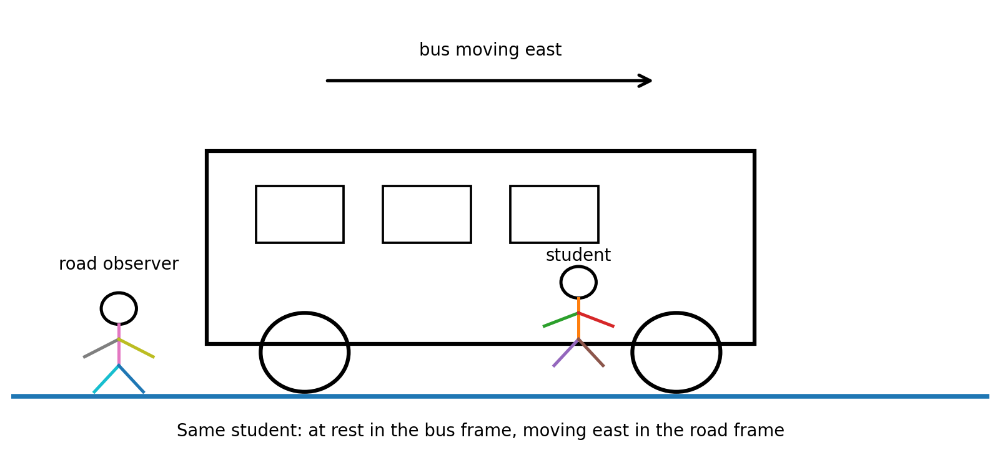
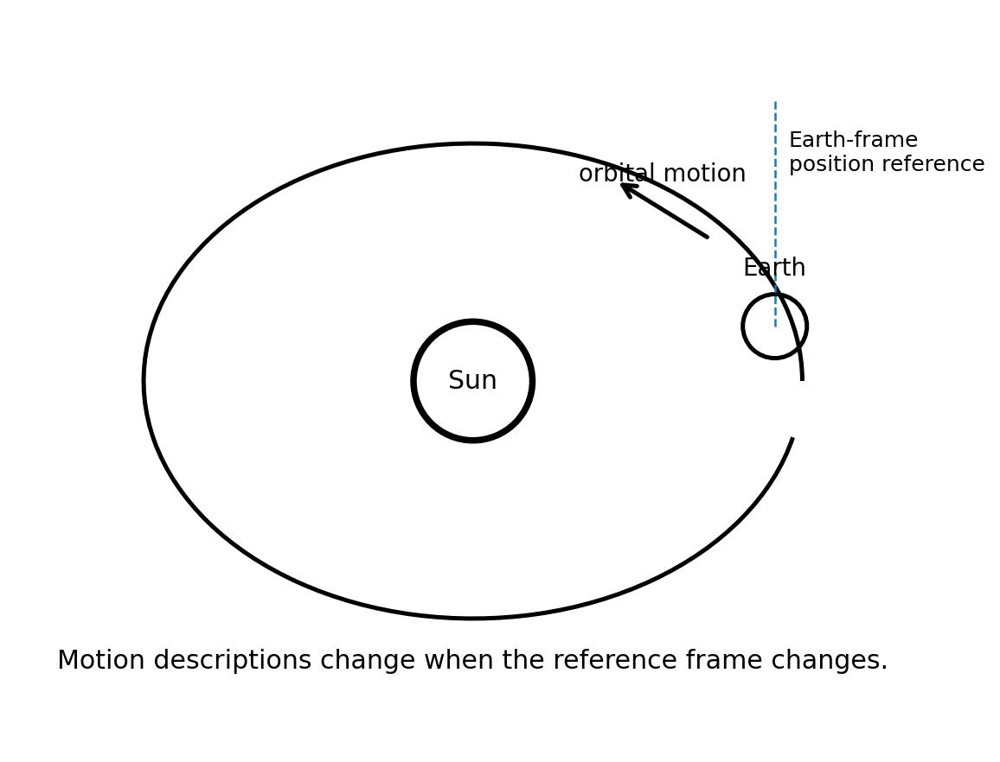

Motion and Reference Frames
- I can explain why an object can be moving relative to one reference frame but not another.
- I can identify the reference frame used in a motion description.
- I can compare motion from two different points of view and explain why everyday motion is usually described relative to Earth’s surface.
Sort before reading. Place each term where it best fits your current understanding.
Motion sounds simple until two observers disagree. A student sitting on a bus may say a backpack on the seat is not moving. A person standing on the sidewalk may say that same backpack is moving east at the speed of the bus. Physics does not fix this disagreement by choosing one observer as “correct.” Instead, physics asks a more careful question: moving relative to what?
A reference frame is the object, place, or coordinate system used to judge position and motion. Once a frame is chosen, you can describe whether an object changes position in that frame. If its position stays the same, the object is at rest in that frame. If its position changes, the object is moving in that frame. The frame is part of the measurement even when ordinary conversation leaves it unstated.

Position Is Always Relative to a Reference
Position tells where an object is compared with a reference. “Two meters from the door” uses the door as part of the reference. “One kilometer east of school” uses the school and a direction. A useful position description gives another observer enough information to locate the object using the same reference.
This matters because a change in position also depends on the reference. A passenger can remain in the same seat for ten minutes, so the passenger’s position relative to the seat does not change. During those same ten minutes, the bus may travel several kilometers, so the passenger’s position relative to Earth changes continuously. One object can therefore have more than one valid motion description at the same moment.
Good physics language makes the frame visible. Compare “the phone is moving” with “the phone is moving east relative to the road.” The second statement is stronger because another person can use the same frame and check the description.
Different Viewpoints Can Both Be Correct
Suppose you walk toward the front of a train while the train moves east. A friend seated on the train sees you move forward through the aisle. Someone standing beside the track sees you move east across the landscape. Both descriptions can be correct because the observers are using different reference frames.
The important habit is to keep each measurement tied to its own frame. Do not combine statements from different frames as if they were measured from the same place. First name the frame, then describe position, direction, and change in position.
Situation: A student sits in a bus moving east at constant speed. A book rests on the student’s lap. Describe the book in two frames.
- In the bus frame, the book keeps the same position relative to the student.
- In the road frame, the book changes position as the bus travels east.
- State both answers with the frame included.
Result: The book is at rest relative to the bus and moving east relative to the road.
A water bottle sits in a cup holder of a car moving north. Describe the bottle relative to the car and relative to a mailbox beside the road.
Earth’s Surface Is the Everyday Default
In most classroom and everyday motion problems, the ground or Earth’s surface is the assumed frame. A runner’s speed, a car’s direction, and a dropped ball’s motion are usually described relative to Earth. This is a practical convention, not a claim that Earth is absolutely motionless.
Earth itself rotates once each day and travels around the Sun. The Sun also moves within the galaxy. If the question changes, the useful reference frame can change too. A person standing still on a sidewalk is at rest relative to the sidewalk, moving with Earth’s rotation relative to Earth’s axis, and moving through space relative to the Sun.

Choosing a Useful Frame
A good reference frame makes the question easier to answer. To study a student walking across a classroom, the classroom floor is useful. To describe a person walking inside an airplane, the cabin may be useful for motion within the aisle, while Earth’s surface may be useful for the airplane’s trip. The most useful frame depends on what relationship you want to measure.
Changing frames does not change the event itself; it changes how the event is described. A tossed ball inside a smoothly moving vehicle can travel up and down relative to a passenger while also moving forward relative to the road. The same path can look different when observed from different frames.
Situation: A student walks 2 m toward the front of a bus while the bus travels 20 m east relative to the road during the same interval.
- Use the bus frame first: the student changes position by 2 m toward the front of the bus.
- Use the road frame separately: the student is carried east with the bus while also moving through the bus.
- Do not call either description the one “real” motion; identify the frame.
Result: The student has different, compatible motion descriptions in the two frames.
A person walks toward the rear of a train while the train moves forward. Explain why an observer on the train and an observer beside the track may disagree about the person’s motion without either observer being wrong.
Relative Motion Is a Comparison
The phrase relative motion emphasizes that motion is a comparison between an object and a chosen frame. When two objects move together at the same speed and direction, their positions relative to one another can stay nearly constant even though both move relative to Earth. Two cars traveling side by side on a highway can appear almost stationary to each other.
Conversely, an object that is stationary in one frame can move rapidly in another. This is why physics descriptions should include the reference frame whenever confusion is possible. Precise language is not extra decoration; it is part of the measurement.
Situation: An airplane cruises steadily while a passenger sits in a seat.
- Relative to the airplane, the passenger’s position does not change.
- Relative to Earth, the passenger changes position with the airplane.
- If the question is about walking to the restroom, the airplane frame is convenient; if the question is about the trip between cities, the Earth frame is convenient.
Result: The useful reference frame depends on the question being asked.
Create your own example of one object that is at rest in one frame and moving in another. Name both frames and explain why both descriptions are valid.